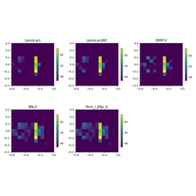
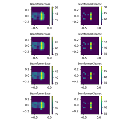

Wind tunnel examples¶
Examples that show the application of advanced microphone array methods (frequency and time-domain).

Airfoil in open jet – Covariance matrix fitting (CMF).
Airfoil in open jet -- Covariance matrix fitting (CMF).

Airfoil in open jet – steering vectors.
Airfoil in open jet -- steering vectors.

Airfoil in open jet – Frequency domain beamforming methods.
Airfoil in open jet -- Frequency domain beamforming methods.


Airfoil in open jet – Time domain beamforming methods.
Airfoil in open jet -- Time domain beamforming methods.